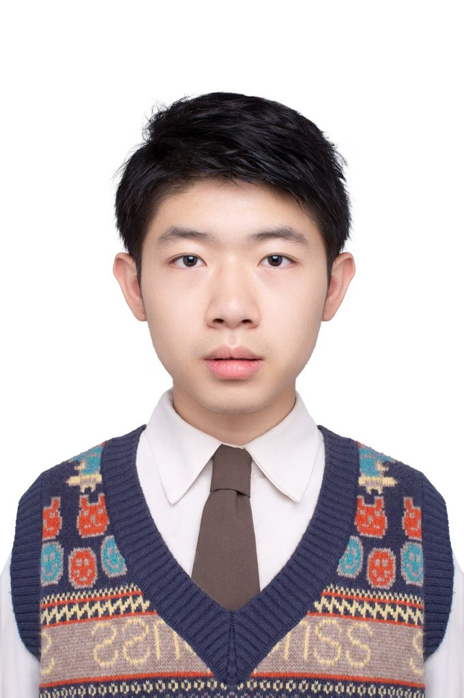

No.01
“华数杯”全国大学生数学建模竞赛
从这里开始,迈出建模与数据分析的第一步。
三等奖
国家级
中南财经政法大学 · 数据科学与大数据技术
本科在读 · 2024 级
数据科学与大数据技术专业本科生,目前在生物信息学领域持续学习与探索。下面是我在校期间的学业与荣誉记录,持续更新中。

从这里开始,迈出建模与数据分析的第一步。
学业绩点专业排名第 6 / 188。
学业与综合素质双优。
参与项目研究,负责实证模型的搭建,项目顺利结项。
非数学专业组。
在研项目 / In progress
生物信息学方向的开源工具,目前正持续开发与迭代中。